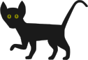

The purpose of this game is to replicate near-perfect feline bahaviors from an AI program. Based on a few genetically-proven
behavioaral variables, the AI will interpret additional data about the cats environment, current stimulations, and past
learning to opperate a feline model in emulation of a real cat.
The user experience will be to interact with this cat through VR hands and voice commands to pet it, play with it, and
enjoy watching it as it cats about. If all goes well, the user should be able to welcome the cat onto their lap, and enjoy
watching the realisticaly-rendered life-like fur move as their VR hand "pets" it. There will also be a purr generator
program for sound. I do not like looped sounds, as after a while, I can hear the looping and find it to be irritating.
Purrs will be given a basic set of paramiters and allowed to randomly fluctuate a specific amount within them.
I want as much of this game to be generated by the computer as possible. We can skip over crafting the cat's vocal
chords and coding a program to calculate the sounds they would make- though I've no doubt, if sucsessful, such a program
would be swarmed over by biologists and game developers alike. -Perhaps I should just focus on this? Odds are, a similar
program already exists.
For Example:
A cat may wish to jump onto a table to enjoy the view outside.
Thus: the cat AI must first process the ambient data, and conclude that there might be something outside worth looking
at, and how urgently it would like to look at it. Next, it has to coornitate its body to stand up, and move towards the table,
while keeping balance. Now, another balancing trick: shifting weight to its back feet and tail to free up its front feet, then
looking and extending upwards to get its eyes over the edge of the table to check for the tabletop's current condition and
occumantcy. If all looks good, the cat lowers back down, and prepares to jump. The AI calculates the distance, force required,
weight of the cat, tail positioning energy, and bodily orchestration to propel its self up onto the table. Hooray! Now that its
here, it can move about to regain balance and comfort, as needed, and position its self to gaze out the window to see what
interesting things might be going on. Is is a bird? A bug? Just some noise? Or good ol' kittycat curiosity?
If the AI decides this is interesting and wants to stay her a while, it might reposition its body into a lower minimal-
to-mantain energy state, and rest for a bit, enjoying the outdoor show. If there was a strong, or urgent desire to look
jump onto the table, the cat may decide it's worth the energy and take a running leap at it. That would be acceleration
times mass, accounting for friction, coordinated into the body musculs, and then calculated for distance to optimise landing
in one piece, and not having its paws slip on the hardwood floor.

Basic core variables: The main key variables will be used to derrive everything about a cat's behavior. These may be set by the user, or
chosen randomly. By default, each setting is at 5, the middle.
Shyness VS. Agressive/Assertivness
Intelligence
Socialability
Energy/metabolism
size
Friendly VS. Aloof
Sensitivity
Feral Instincts
Optional Features:
Neurological weirdness
missing piece (leg, eye, what have you)
past truama (extra nurturing for scared shelter kitties)